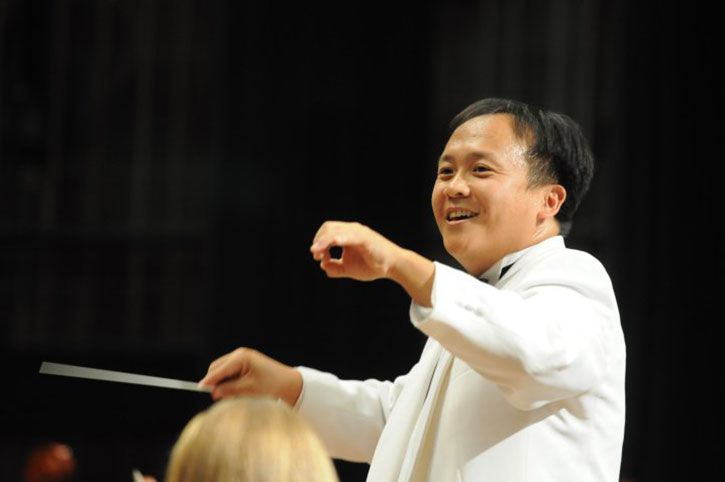

University of Pennsylvania's Premier Symphony Orchestra
The University of Pennsylvania Symphony Orchestra was founded in 1878 and is comprised of musicians from throughout the University community, primarily undergraduates. The ensemble rehearses for four hours each week, Monday and Thursday nights, and performs a diverse range of repertoire drawn from the eighteenth, nineteenth, and twentieth Centuries. The Penn Symphony Orchestra rehearses and performs in historic Irvine Auditorium on Penn’s Campus.*WE SHOULD REWRITE THIS BLURB MAYBE????*
Thomas Hong
 Hailed by Kurt Masur as "one of the most talented young conductors of his generation," Thomas Hong enjoys the distinction of being one of many successful protégés of the great Maestro. Having won titled positions with the Dallas, Pittsburgh, and Seattle Symphony Orchestras as well as Orchestre National de France, Hong has conducted countless concerts with those orchestras, ranging from classical, community, education and pops concerts. Presently, he is the artistic director and conductor of the University of Pennsylvania Orchestras. Recent activities include being principal conductor for the inaugural season of the DSO on the "GO" series with the Dallas Symphony, performing in neighboring venues of the North Texas area, and a re-engagement with the Utah Symphony, where he was the conductor for the Gina Bachauer International Piano Competition in Salt Lake City.
Orchestras that Hong has conducted in the past include the Utah, Fort Worth, Virginia, Richmond, Spokane, and Winnepeg Symphonies as well as the Seoul, Buffalo, and Lutosławski Philharmonics. More recent invitations include the Berlin Symphony, North Czech Philharmonic Orchestra, Orchestra Sinfonica di Siciliana and Cairo Symphony Orchestra. Among his operatic and vocal performances are Copland's The Tenderland, Mahler's Das Lied von der Erde, Stravinsky's The Rake's Progress, and Donizetti's L'exisir d'Amore at the Wortham Opera Theatre in Houston. Awards that Hong has received include the Leopold Stokowski Felowship, the Whitaker Opera Prize and a residency aware by the Brahms society of Baden-Baden. His latest recording was from the show "From the Top" with pianist/host Christopher O'Riley and the DSO at the Meyerson Symphony Center.